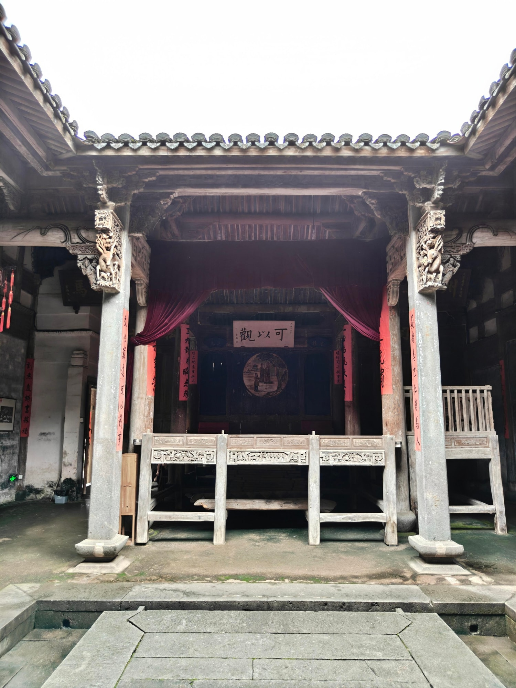
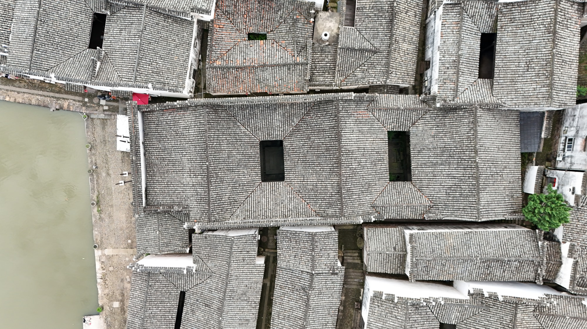
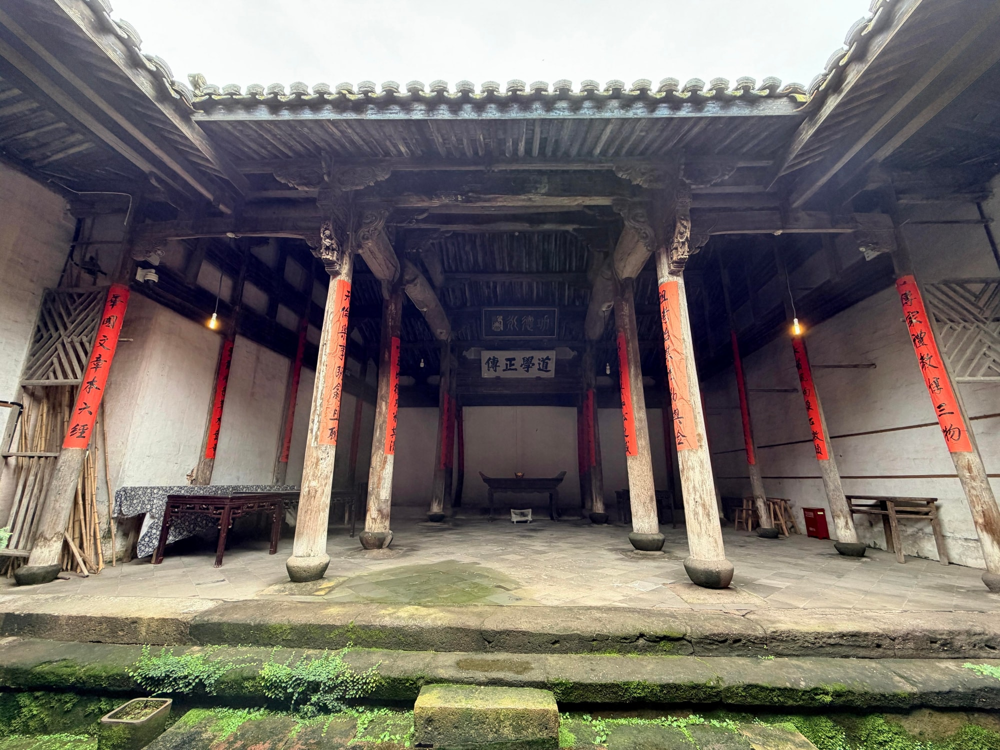

国保宗祠建筑
广庭深院，礼乐相闻有序堂
有序堂是玉华叶氏总祠，坐落在新叶村北端，也是全村规模最大的宗祠之一。
01
“有序”二字的由来
相传有序堂由叶氏先祖东谷公主持营建，取“作堂以聚族属”之意，堂号题作“有序”。“序”寄托着长幼有秩、远近相亲的宗族理想——把全族老幼远近都聚拢于一堂，正是这座总祠命名的本意。
02
一进之内的古戏台

有序堂共三进院落，进与进之间以天井相隔，一进之内设有戏台。逢年过节、迎神赛会，族人便聚在这里看戏。戏台两侧粗大的木柱与檐下层层叠叠的雕花牛腿，至今仍显出这座总祠的讲究。
03
大门前不建房的规矩

有序堂的大门开在祠堂左前端，正与南塘边的门台相对。相传祖上定下规矩，从村北的有序堂一直到道峰山之间不许建房；各房派的分祠则半环状分布在它的左右和后方。这条老规矩让祠堂前始终保持开阔，也无意间守护了古村的一片视野。
04
三月三的迎神巡游

每年三月三，新叶村的迎神巡游以有序堂为起点和终点。队伍前往五圣庙请出所奉神像，再用樟木神轿迎回祠堂，形成祭祖与民间信仰相互连接的村落仪式。有序堂内还供奉着叶氏外宅派前七世先祖的牌位。